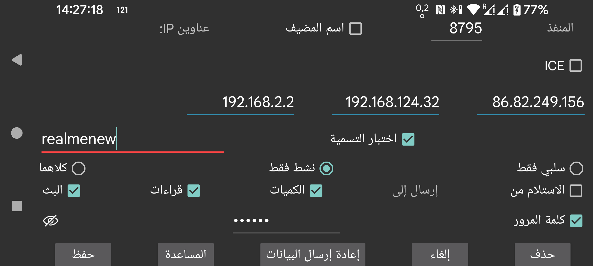

ar be de es fr it nl pl pt ru sv tr uk uz zh en
حدّد اتصالًا مع نسخة أخرى من Juggluco. يرسل Juggluco على جهاز ما البيانات عبر IP/TCP إلى Juggluco على جهاز آخر. ولإنشاء الاتصال، يجب أن يستمع أحد نسختَي Juggluco على منفذ، بينما يتصل الطرف الآخر بذلك المنفذ. وقد عُرض المنفذ الذي تستمع عليه هذه النسخة من Juggluco في الشاشة السابقة (القائمة الوسطى اليسرى → استنساخ). وهنا تحدد المنفذ الذي ستتصل به هذه النسخة من Juggluco إذا كانت هي التي تبدأ الاتصال. وإذا كانت هذه النسخة لا تستطيع الاستماع على منفذ، فاختر نشط فقط. وإذا كان الطرف الآخر لا يستطيع الاستماع على منفذ، فاختر سلبي فقط. وفي غير ذلك اترك كلاهما محددًا. ويجب أن يختار Juggluco في الطرف الآخر سلبي فقط إذا اخترت هنا نشط فقط، وأن يختار نشط فقط إذا اخترت هنا سلبي فقط، وأن يختار كلاهما إذا اخترت هنا كلاهما.
إذا كانت هذه النسخة من Juggluco هي التي تبدأ الاتصال، فعليك تحديد عنوان أو عناوين IP التي يجب أن تتصل بها. وإذا كان لذلك المضيف أكثر من عنوان IP، فيمكنك إدخال أكثر من عنوان واحد؛ مثلًا عندما يكون الجهازان متصلين أحيانًا عبر الشبكة المنزلية وأحيانًا أخرى مباشرة عبر نقطة اتصال محمولة.
تحذير: لا تُدخل أبدًا عناوين IP لأجهزة متعددة مختلفة، لأن كل جهاز منها سيتلقى عندئذٍ جزءًا فقط من البيانات.
اسم المضيف: أدخل اسم مضيف واحدًا بدلًا من عناوين IP. وهذا يجعل الاتصال معتمدًا على خادم أسماء، وبالتالي أبطأ وأكثر تأثرًا بانقطاع الاتصال بخادم الأسماء. ولا ينبغي تشغيل هذا الخيار إلا إذا لم تستطع ضبط عنوان IP ثابت وكان اسم المضيف يُسنَد تلقائيًا إلى عنوان IP المتغير.
في جميع الحالات ما عدا نشط فقط، يمكنك اختيار اكتشاف. وفي هذه الحالة يحفظ Juggluco أول عنوان IP يتصل به على أنه عنوان IP للطرف الآخر. ويمكن التحقق من أن الجهاز الصحيح هو الذي يتصل بطريقتين: اختر اختبار IP لاختبار عنوان IP. وإذا اخترت اختبار التسمية فلن يُنشأ الاتصال إلا إذا حدّد الطرفان التسمية نفسها.
اختر الاستلام من إذا كنت تريد أن يعمل هذا التطبيق في وضع الاستنساخ.
إذا أردت أن يكون هذا الجهاز هو المرسل للبيانات، فيجب أن تحدد أنواع البيانات التي تريد إرسالها.
الكميات: بيانات الجرعات والطعام والنشاط التي أدخلتها.
القراءات: البيانات التي يتم الحصول عليها عند مسح المستشعر (القراءات والسجل مع Libre2، ومع Libre3 فقط البيانات اللازمة للوصول إلى المستشعر عبر البلوتوث).
البث: البيانات المستلمة عبر البلوتوث. ومع Libre3 يشمل ذلك بيانات السجل أيضًا.
أحيانًا تكون بعض البيانات موجودة بالفعل على الجهاز المستقبل. ويمكنك تحديد حتى أي وقت تكون هذه البيانات موجودة:
البداية: لا توجد بيانات موجودة.
الآن: جميع البيانات موجودة.
أو يمكنك اختيار تاريخ محدد يتحدد من موضع بداية الشاشة.
عند إضافة مصدر بيانات إلى اتصال موجود بالفعل، فإن تاريخ البداية يحدد فقط مصدر البيانات المضاف. فعلى سبيل المثال، إذا كانت القراءات والبث قد أُرسلا بالفعل إلى المضيف، ثم أُضيفت الآن الكميات، فإن تاريخ البداية يحدد فقط الكميات التي يجب إرسالها.
إذا كان الجهازان متصلين عبر اتصال غير آمن، فيمكن توقيع البيانات وتشفيرها من خلال تحديد كلمة المرور نفسها على جانبي الاتصال، وبحد أقصى 16 حرفًا. اختر حفظ لحفظ ما حددته. ويؤدي حذف إلى حذف مواصفات هذا الاتصال.
QR: أنشئ الطرف الآخر من الاتصال عبر مسح رمز QR.
في أبسط الحالات تكون جميع الاتصالات ضمن شبكتك المنزلية، لذلك يمكنك استخدام عناوين IP محلية. ويمكنك أيضًا الاتصال عبر الإنترنت باستخدام Wi‑Fi. وفي هذه الحالة ينبغي الرجوع إلى دليل المودم لمعرفة كيفية توجيه منفذ خارجي إلى عنوان IP ومنفذ داخل شبكتك المنزلية.
يمكن لهاتفين ذكيين متصلين عبر بيانات الهاتف المحمول ومن خلال الإنترنت أن يتصلا مباشرةً ببعضهما، إذا كان أحدهما قادرًا على الاستماع على منفذ شبكي. وإذا لم يكن أيٌّ منهما قادرًا على ذلك، مثلًا إذا لم يكن لأيٍّ منهما عنوان IP فردي، فلا يزال بإمكانهما التواصل عبر جهاز ثالث. ومن أحد الاحتمالات تشغيل Juggluco على جهاز Android في المنزل، بحد أدنى Android 4.4، ومتصّل بالإنترنت عبر مودم. واحتمال آخر هو تشغيل برنامج سطر أوامر تابع لـ Juggluco على كمبيوتر، مثل حاسوبك الشخصي أو Amazon AWS: https://www.juggluco.nl/Juggluco/cmdline/index.html
شروحات توجيه المنافذ:
https://portforward.com/how-to-port-forward/
https://stevessmarthomeguide.com/understanding-port-forwarding/
يمكن استقبال قيم الغلوكوز عبر البلوتوث على جهاز لا يحتوي على NFC (انظر https://www.juggluco.nl/Juggluco/mirror): فعِّل المستشعر عبر NFC على الجهاز الذي يملك NFC، ثم أرسل بيانات القراءات والبث إلى الجهاز الذي لا يملك NFC. وبعد ذلك اعكس الاتصال لبيانات البث، ثم أوقف اتصال البلوتوث على الجهاز الذي يملك NFC وشغِّله على الجهاز الذي لا يملك NFC، وكذلك أوقف خيار المستشعر عبر البلوتوث على الجهاز الذي يملك NFC وشغِّله على الجهاز الذي لا يملك NFC. وبهذه الطريقة يمكنك المسح بجهاز واحد والحصول على قيم الغلوكوز عبر البلوتوث على جهاز آخر. ولكن يجب أن تكون جميع بيانات المستشعر متاحة على جميع الأجهزة. فإذا كانت الأجهزة تتبادل البيانات، فيجب أن تتلقى دائمًا بيانات القراءات والبث معًا. لذلك ينبغي دائمًا إعادة إرسال بيانات البث إلى الجهاز الذي يملك NFC، وإعادة إرسال بيانات القراءات إلى الجهاز الذي لا يملك NFC. وإلا ستخرج البيانات عن التزامن، مما يؤدي إلى استخدام بيانات مصادقة قديمة أو إلى الكتابة فوق بيانات جديدة ببيانات قديمة.
أما بيانات الكميات فهي مستقلة تمامًا.
توجد طريقة مختلفة تمامًا لإنشاء اتصال، وهي ICE (Interactive Connectivity Establishment). وهي تجعل من الممكن إنشاء اتصال بين نسختين من Juggluco من دون أي توجيه للمنافذ. وفي معظم الحالات يحصل الهاتفان على اتصال مباشر من دون أي خادم وسيط. وفي بعض الحالات لا يكون ذلك ممكنًا، وعندها تكون هناك حاجة إلى خادم TURN. ويمكن تحديد خادم TURN من خلال القائمة الوسطى اليسرى → استنساخ → خادم TURN. وفي حالات أخرى لا تكون الخوادم مطلوبة إلا لتجميع الهاتفين معًا. ولهذا تحتاج إلى تحديد تسمية ICE لا يعرفها إلا طرفا الاتصال، ولا يستخدمها أي مستخدم آخر لـ Juggluco. ويجب أن يحدد أحد طرفي الاتصال القيمة 0 والطرف الآخر القيمة 1. كما يجب أيضًا مشاركة تسمية بين طرفي الاتصال، لكن يكفي أن تكون فريدة على هذين الهاتفين فقط. وبدلًا من إدخال كل شيء هنا، يمكنك استخدام القائمة الوسطى اليسرى → استنساخ → AutoQR لإنشاء اتصال تلقائيًا ثم مسح رمز QR بالهاتف الموجود في الطرف الآخر من الاتصال.
يلزم وجود إعداد مكمّل صارم على جانبي الاتصال. فحتى سهو بسيط واحد قد يجعل نقل البيانات مستحيلًا.
وقد يحدث أن يتعطل الاتصال ويتطلب إعادة ضبطه بتشغيل Wi‑Fi أو إيقافه أو بالضغط على مزامنة. كما أن تغيير اتصال من نوع نشط فقط-سلبي فقط إلى كلاهما أو العكس قد يُحدث فرقًا.
ويجب أيضًا مراعاة تغيّر عناوين IP عند تغيّر نوع الاتصال. فعلى سبيل المثال، يجب استخدام عناوين IP مختلفة على الشبكة المنزلية عنها عند الاتصال عبر نقطة اتصال محمولة.